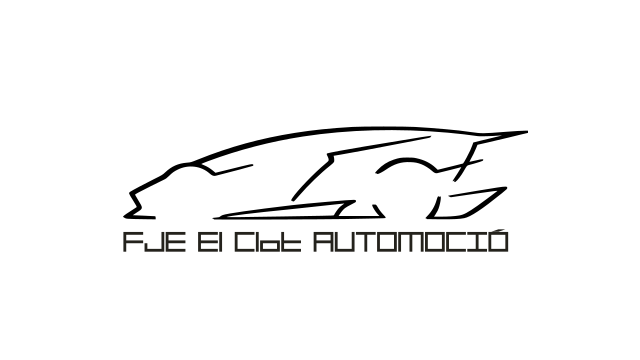
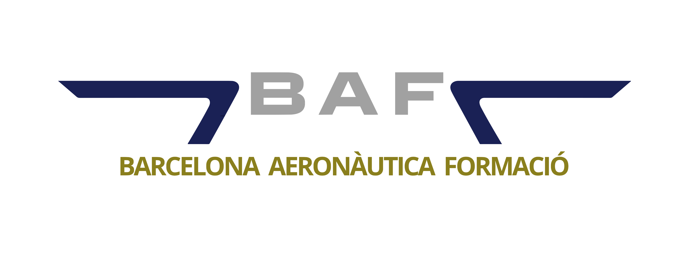
Departament de Transport i Manteniment de Vehicles
Formació professional orientada a l'ocupabilitat, la tecnologia i els valors.
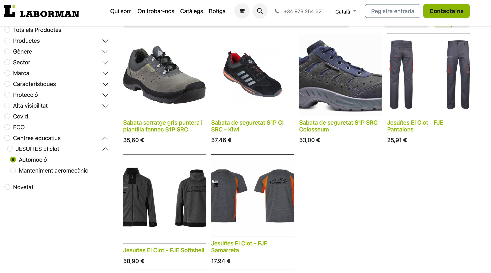
Fes clic per anar a la botiga
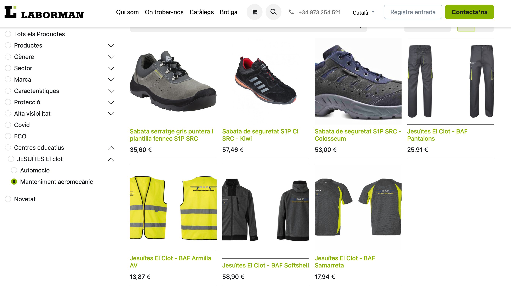
Fes clic per anar a la botiga
Electromecànica de vehicles
Objectius professionals
- Manteniment i reparació de motors tèrmics i sistemes auxiliars.
- Tren de rodatge: frens, transmissió, direcció i suspensió.
- Sistemes elèctrics: modificacions i noves instal·lacions.
- Administració, gestió i comercialització en petit taller.
Objectius personals
- Autonomia, treball en equip, respecte i excel·lència professional.
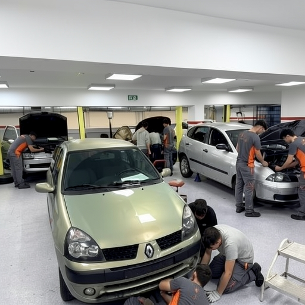
EMV — Dades del cicle
- Títol: Tècnic/a en Electromecànica de Vehicles
- Durada: 2000 h lectives
- Horari: 2 cursos de matí (dl–dv, 8:00–14:00)
- FCT: 516 h en empreses del sector
EMV — Què hi aprendràs? (Mòduls)
Mecànica de Vehicles
- Motors i sistemes auxiliars
- Fluids, suspensió i direcció
- Transmissió i frenada
Electricitat i Taller
- Mecanització bàsica
- Sistemes de càrrega i arrencada
- Circuits elèctrics, seguretat i confort
Àmbit Professional i Innovació
- Projecte integrat d'electromecànica
- Digitalització i Sostenibilitat
- Anglès tècnic professional
- Itineraris per a l'Ocupabilitat (I i II)
Especialització: Món de la Competició
Del taller de l'escola al Pit Lane. Vols formar part d'un equip de carreres?
Gràcies a l'aliança amb RS Grup, oferim als nostres alumnes una oportunitat única: complementar els estudis oficials amb formació d'alt rendiment en motorsport.
Oferta RS Grup: Mecànica de Competició
- Prepara't per treballar als boxes.
- Mecànica, telemetria, set-up de suspensions i gestió de cursa.
- Pràctiques reals en circuits i equips de competició.
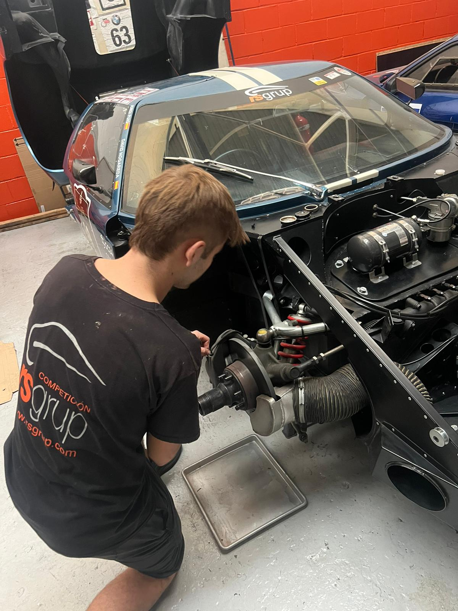
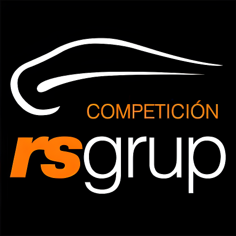
EMV — Avaluació
- Assistència: Mínima del 80% per mòdul. Amb absències superiors al 20%, la qualificació serà No avaluat.
- Control: Es passa llista cada hora de classe. S'enviarà un avís a les famílies per SMS si cal.
EMV — Material de taller
- Roba de taller de l’escola
- Equip d’eines: carraca, tornavisos, alicates
- Multímetre, soldador i estany
- Cost aproximat: ≈ 250€
- Ordinador
Fes clic per anar a la botiga
EMV — Pràctiques i col·laboracions
- Pràctiques curriculars en centres de treball del sector.
- Col·laboració amb tallers (visites, estades, seminaris, etc.).
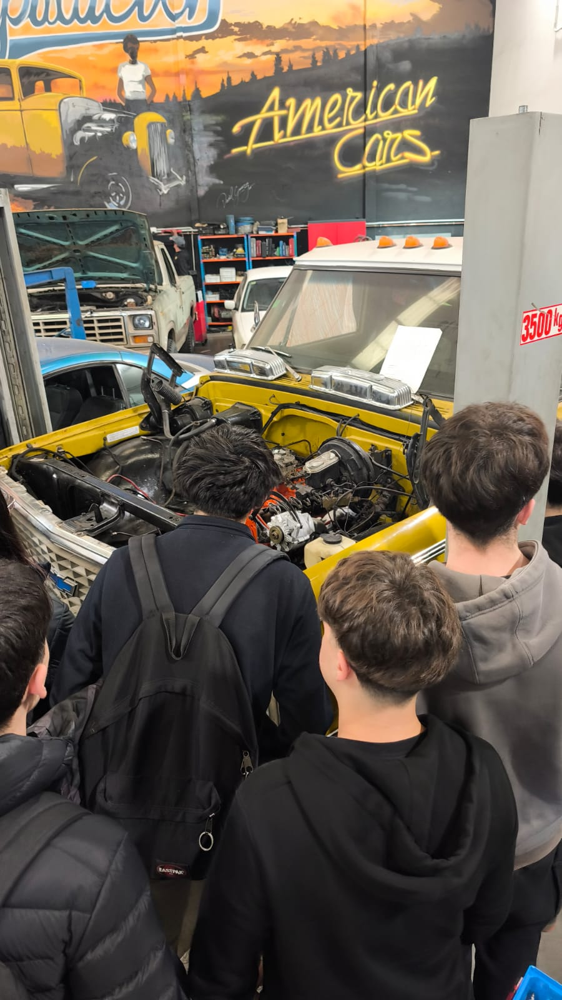
AUTO — CFGS Automoció
Objectius professionals
- Organitzar, programar i supervisar el manteniment.
- Proves de laboratori i verificació del funcionament.
- Gestió i comercialització del taller; compravenda.
Valors i competències
- Autonomia, treball en equip, respecte, professionalitat.
- Presa de decisions, flexibilitat i comunicació.
AUTO — Dades del cicle
- Títol: Tècnic/a Superior en Automoció
- Durada: 2000 h lectives | Horari: 2 cursos de tarda (dl–dv)
- FCT: Dual general 515 h / Dual intensiva 1100 h
Figura de l’aprenent (Dual)
- Model inspirat en FP d’Alemanya/Àustria/Suïssa, adaptat.
- Beca salari: 1000–1100 h; gratificació mínima 70% del SMI. Alta inserció.
AUTO — Què hi aprendràs? (Mòduls)
Mecànica i Sistemes
- Motors tèrmics i els seus sistemes auxiliars
- Transmissió de forces i trens de rodatge
- Sistemes elèctrics, de seguretat i confortabilitat
Carrosseria i Estructures
- Elements amovibles, fixos i estructures del vehicle
- Tractament i recobriment de superfícies
Gestió, Innovació i Empresa
- Gestió i logística del manteniment de vehicles
- Digitalització i Sostenibilitat aplicada al sector
- Projecte final en automoció i Mòduls Optatius
- Anglès tècnic professional
- Tècniques de comunicació i relacions
- Itineraris per a l'Ocupabilitat (IPO I i II)
Especialització: Món de la Competició
Del taller de l'escola al Pit Lane. Vols formar part d'un equip de carreres?
Gràcies a l'aliança amb RS Grup, oferim als nostres alumnes una oportunitat única: complementar els estudis oficials amb formació d'alt rendiment en motorsport.
Oferta RS Grup: Mecànica de Competició
- Prepara't per treballar als boxes.
- Mecànica, telemetria, set-up de suspensions i gestió de cursa.
- Pràctiques reals en circuits i equips de competició.
AUTO — Avaluació
- Assistència: Mínima del 80% per mòdul. Amb absències superiors al 20%, la qualificació serà No avaluat.
- Control: Es passa llista cada hora de classe.
AUTO — Material de taller
- Roba de taller de l’escola
- Equip d’eines: carraca, tornavisos, alicates
- Multímetre, soldador i estany
- Cost aproximat: ≈ 250€
- Ordinador
Fes clic per anar a la botiga
AUTO — Pràctiques i col·laboracions
- Pràctiques curriculars en centres de treball del sector.
- Col·laboració amb tallers (visites, estades, seminaris, etc.).
TMA — Manteniment Aeromecànic
Objectius
- Manteniment programat i correctiu en línia/hangar.
- Manteniment de sistemes d’aviònica en línia.
- Fabricació/assemblatge segons normativa.
Dades bàsiques
- Durada: 2957 h (3 cursos) — 1r: matí; 2n/3r: tarda
- FCT: 782–1100 h
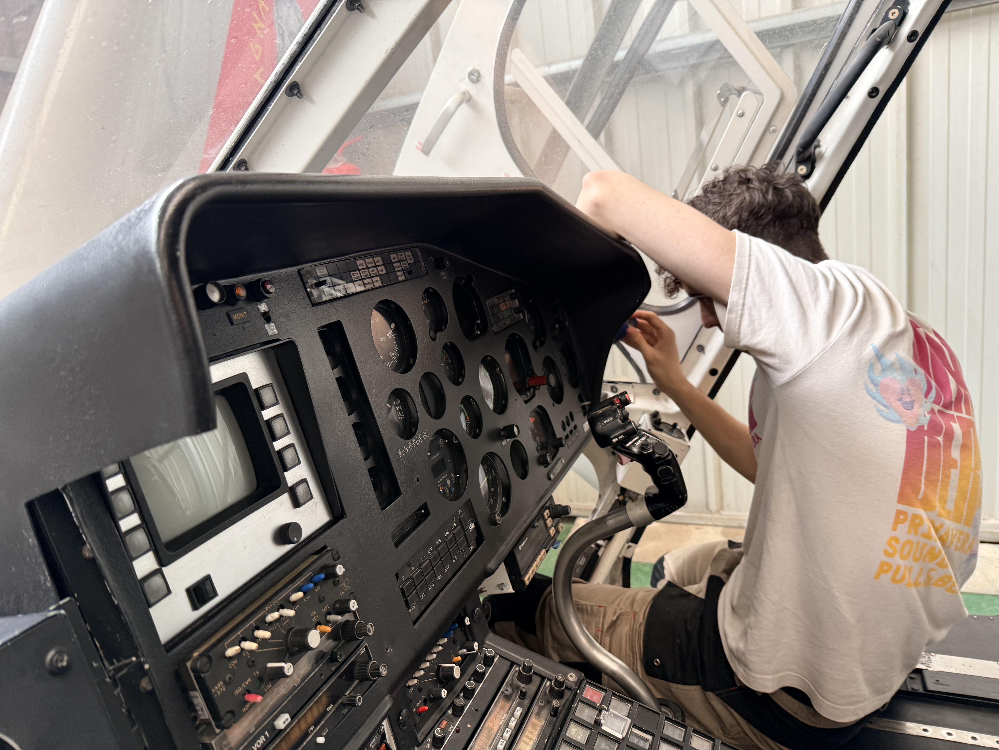
TMA — Mòduls (síntesi)
- Fonaments d’electricitat i electrònica; tècniques digitals i sistemes d’instruments
- Materials, equips i eines; pràctiques de manteniment mecànic i d’aviònica
- Aerodinàmica bàsica; factors humans; legislació aeronàutica
- Sistemes de cèl·lula i comandaments de vol; hidràulics, pneumàtics i tren d'aterratge
- Sistemes d’oxigen, aigües i protecció
- Motors de turbines de gas; hèlixs
- Anglès professional; itineraris d’ocupabilitat; digitalització i sostenibilitat
- Projecte intermodular i mòdul optatiu
TMA — Itineraris i llicència
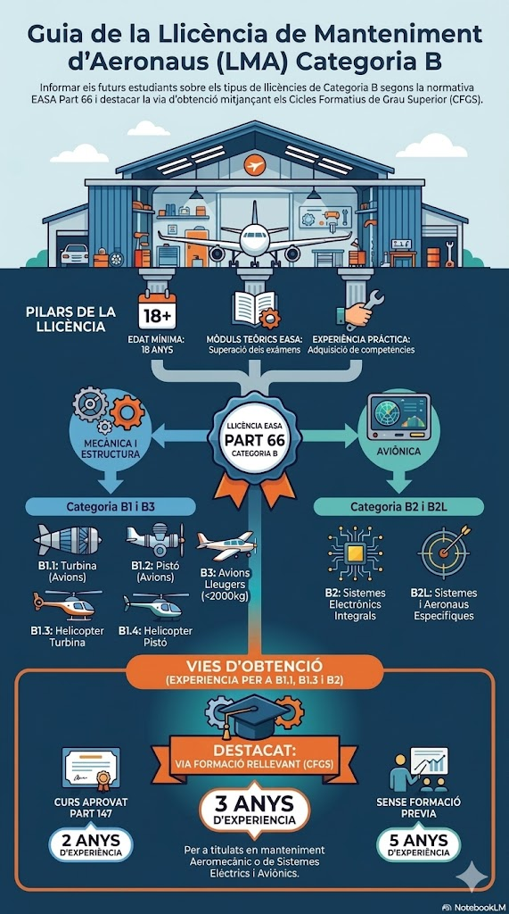
Material tallers i aules
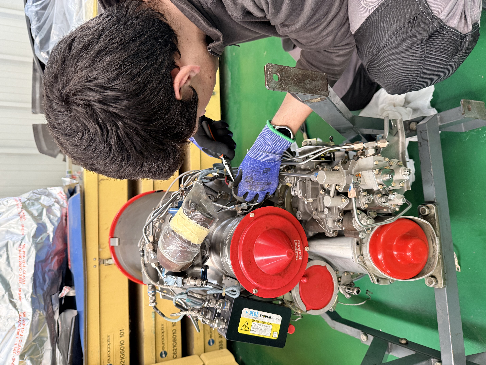
- Roba de taller:
- Botes: sola antilliscant i puntera reforçada.
- Ordinador i bibliografia tècnica (Segons indicacions a principi de curs)
Fes clic per anar a la botiga
TMA — Empreses i activitats
- Col·laboració i pràctiques amb empreses del sector.
- Visites tècniques a instal·lacions aeronàutiques
- Opendays: 20 d'abril i 12 de maig ambdos a les 18h

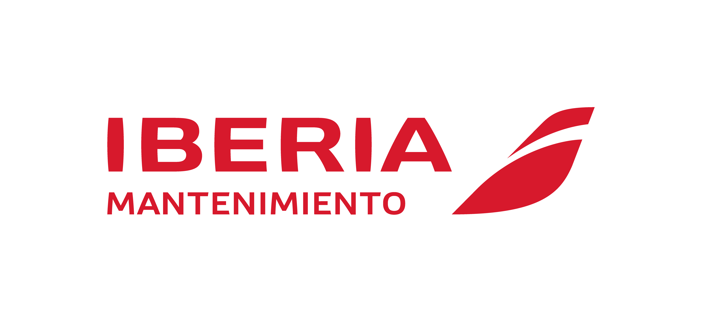
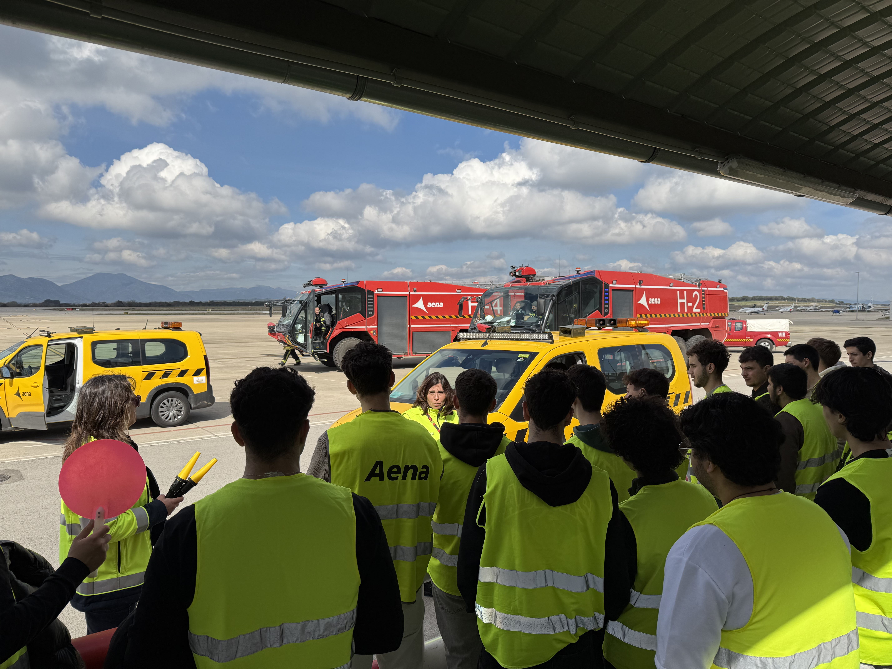
Contacte i Enllaços
Jesuïtes El Clot
Adreça: València 680, 08027 Barcelona
Telèfon: 93 351 60 11
Correu: info.clot@fje.edu